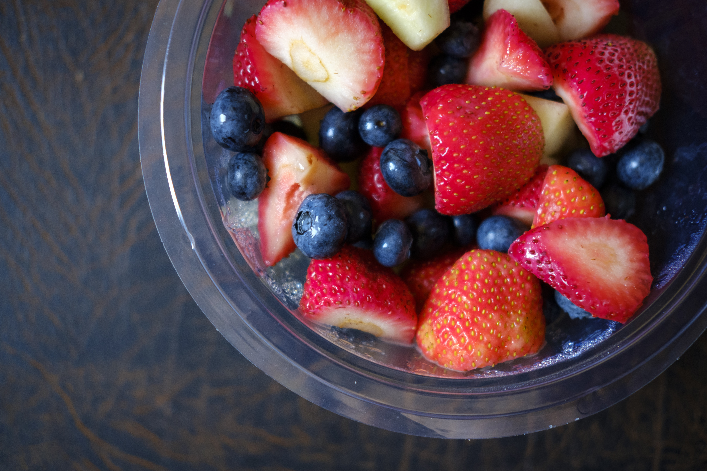

Salada de Frutas

Ingredientes
- Banana, maçã, laranja, morango, abacaxi, mamão, manga, kiwi e uvas.
- Suco de laranja ou limão para preservar as frutas.
- Açúcar, mel ou leite condensado (opcional).
Modo de Preparo
- Pique todas as frutas em cubos.
- Misture em uma tigela grande.
- Adicione suco de laranja ou limão para evitar escurecimento.
- Se desejar, acrescente leite condensado ou mel.
- Leve à geladeira por 30 minutos a 1 hora antes de servir.
Dicas úteis
- Frutas cítricas ajudam a manter a cor e o frescor.
- Evite melancia e melão se quiser maior durabilidade, pois soltam muita água.
- Hortelã, granola ou iogurte podem ser adicionados para variar.